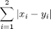
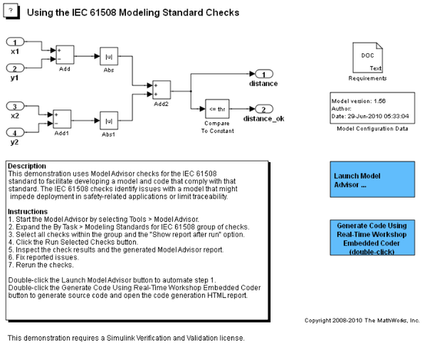

IEC 61508 モデルリング標準チェックの使用
このデモでは、IEC 61508 規格に準拠するモデルとコードの開発を容易にするために、モデル アドバイザー チェックを使用して IEC 61508 規格をチェックします。
この IEC 61508 のチェックでは、安全性に関連するアプリケーションで配布を妨げたり、トレーサビリティを制限したりするモデルの問題を即座に特定することができます。
目次
チェックするモデルについて
機能要件に基づき、ポイント (x1,x2) とポイント (y1,y2) の間の 1 ノルム距離が所定のしきい値 thr より小さいのか、同じなのかをチェックするモデルを作成してください。2 つのポイント (x1,x2) および (y1,y2) について、1 ノルム距離は次のように与えられます。

rtwdemo_iec61508 モデルは先行の条件を実装します。モデルを開き、その内容を確認してください。
model='rtwdemo_iec61508';
open_system(model)
 IEC 61508 モデルリング標準チェックの適用
IEC 61508 安全性規格への準拠が必要となる、安全性に関連するソフトウェア コンポーネントにモデルを配布するには、このような環境への配布を妨げたり、モデルと生成されたソース コード間のトレーサビリティを制限したりする可能性のある問題がないか、モデルをチェックしてください。
モデルに準拠問題がないかどうかを確認するには
- [ツール] > [モデル アドバイザー] を選択するか、MATLAB コマンド ラインで modeladvisor('rtwdemo_IEC61508') と入力してモデル アドバイザーを起動します。
- [タスク階層] で、[製品別]、[Simulink Verification and Validation] > [モデルリング標準] > [IEC 61508 チェック] を展開するか、[タスク別] > [IEC 61508 のモデルリング標準] を展開します。
- グループ内のすべてのチェック項目を選択します。
- チェック結果を示す HTML レポートを生成するには [実行後にレポートを表示] を選択します。
- [選択したチェックを実行] をクリックします。モデル アドバイザーによって IEC 61508 チェックが処理され、結果が表示されます。
チェック結果を確認し、変更を加えるには
- 右ペインの [レポート]クションで、[概要] を確認します。
- [タスク階層] で、不合格になったチェック項目を選択します。そのチェック項目の右ペインに表示されている結果を確認します。そのチェック項目と報告された問題の解決方法については、チェック項目を選択した状態で、[ヘルプ] をクリックします。
- モデルで [Generate Code Using Real Time Workshop Embedded Coder] ボタンをクリックし、生成されたコードとトレーサビリティ レポートを検証します。
- 報告された問題を解決してチェックを再実行します。
- [レポート] ボックス内のリンクをクリックして、チェック結果を HTML 形式で生成したレポートの内容を確認します。
- 生成された HTML レポートを印刷します。印刷したレポートは、IEC 61508 への準拠のデモンストレーション プロセスで証拠として使用できます。
参考
- IEC 61508 チェックの説明については、Simulink Verification and Validation のドキュメンテーションの IEC 61508 Checks を参照してください。
- モデル アドバイザーの使用方法については、Simulink ドキュメンテーションのモデル アドバイザーの利用を参照してください。
- IEC 61508 準拠についての詳細は、Real-Time Workshop Embedded Coder のドキュメンテーションの Developing Models and Code That Comply with the IEC 61508 Standard を参照してください。